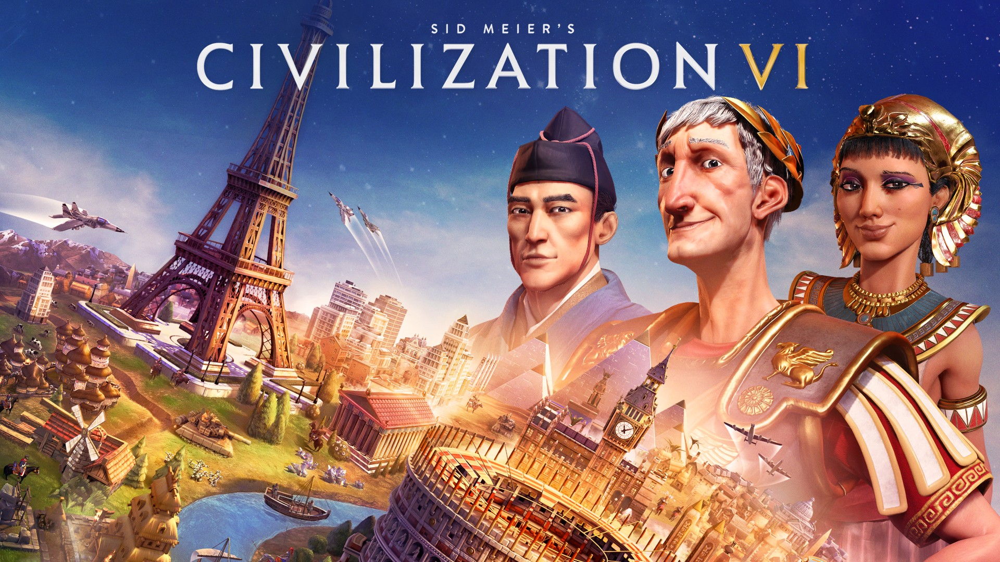
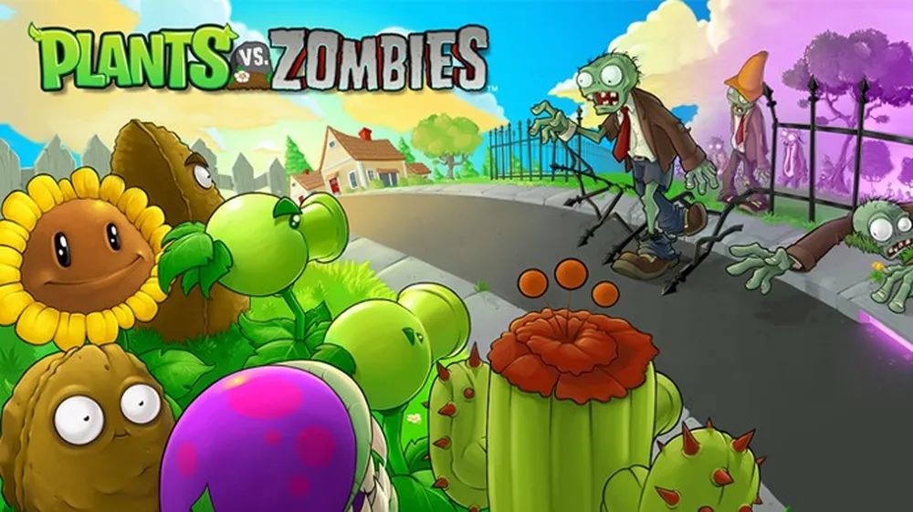

Estratégia
Civilization
Civilization é uma célebre série de jogos de estratégia desenvolvida pela Firaxis Games, onde os jogadores assumem o papel de líderes históricos na construção e expansão de uma civilização desde os primórdios da humanidade até a era moderna. Lançado pela primeira vez em 1991, o jogo desafia os jogadores a explorarem, pesquisarem, negociarem e guerrearem enquanto constroem suas civilizações, desde a fundação de uma pequena vila até a construção de um império global. Com uma jogabilidade profundamente estratégica, Civilization oferece uma experiência envolvente e educativa, onde os jogadores precisam tomar decisões que moldam o destino de sua civilização ao longo dos séculos. Com gráficos impressionantes, mecânicas de jogo complexas e uma comunidade global dedicada, a série Civilization continua a ser uma referência no gênero de estratégia e um dos jogos mais influentes e duradouros da história dos videogames.
Plants vs. Zombies
Plants vs. Zombies é um jogo de estratégia em tempo real desenvolvido pela PopCap Games. Lançado originalmente em 2009, o jogo rapidamente conquistou uma enorme base de fãs devido à sua jogabilidade viciante e seu estilo humorístico único. No jogo, os jogadores devem defender sua casa de uma invasão de zumbis utilizando uma variedade de plantas com habilidades especiais. Cada planta tem sua própria função defensiva, desde atirar ervilhas até explodir os zumbis. Com um design de nível inteligente e desafios crescentes, Plants vs. Zombies oferece uma experiência de jogo cativante que atrai jogadores de todas as idades. Além do jogo original, a franquia expandiu-se para incluir sequências, spin-offs e adaptações para diferentes plataformas, solidificando seu lugar como uma das séries mais reconhecíveis e queridas do gênero de jogos de estratégia e defesa de torres.
League of Legends

League of Legends, frequentemente abreviado como LoL, é um dos jogos de batalha online mais populares e influentes do mundo. Desenvolvido e publicado pela Riot Games, o jogo foi lançado em 2009 e desde então tem cativado milhões de jogadores globalmente. No LoL, os jogadores assumem o papel de "campeões", cada um com habilidades únicas, e competem em equipes para destruir a base inimiga enquanto defendem a sua própria. Com uma vasta seleção de personagens, estratégias variadas e uma comunidade global ativa, League of Legends oferece uma experiência de jogo competitiva e social incomparável. Além disso, o jogo é conhecido por seus torneios de esports de grande escala, como o Campeonato Mundial, que atrai tanto jogadores profissionais quanto espectadores de todo o mundo, solidificando o LoL como uma potência no cenário dos esports e da cultura de jogos eletrônicos.
StarCraft

StarCraft é um lendário jogo de estratégia em tempo real desenvolvido pela Blizzard Entertainment, lançado inicialmente em 1998. Ambientado em um universo de ficção científica, o jogo apresenta três facções distintas: os humanos terranos, os enxames de criaturas alienígenas zergs e a avançada raça protoss. Com uma jogabilidade profunda e estratégica, os jogadores devem coletar recursos, construir bases e exércitos e travar batalhas épicas para dominar o campo de batalha. StarCraft é amplamente reconhecido por seu equilíbrio entre as três raças, suas campanhas envolventes e sua comunidade competitiva vibrante, que deu origem a inúmeros torneios e eventos ao longo dos anos. Além disso, o jogo também é elogiado por sua história rica e seus personagens memoráveis, contribuindo para sua posição como um dos jogos de estratégia mais influentes e duradouros de todos os tempos.